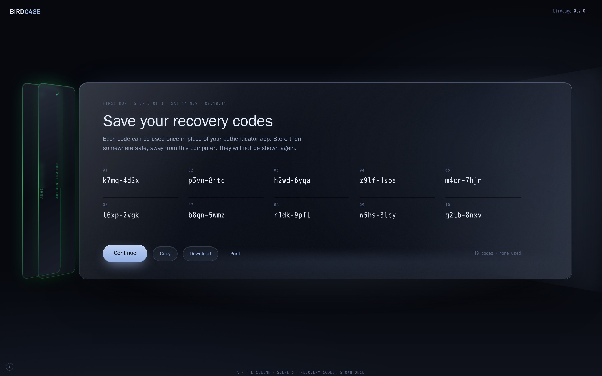
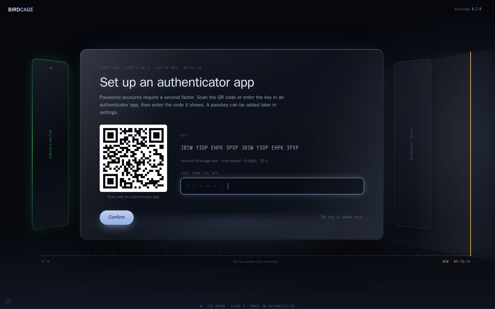
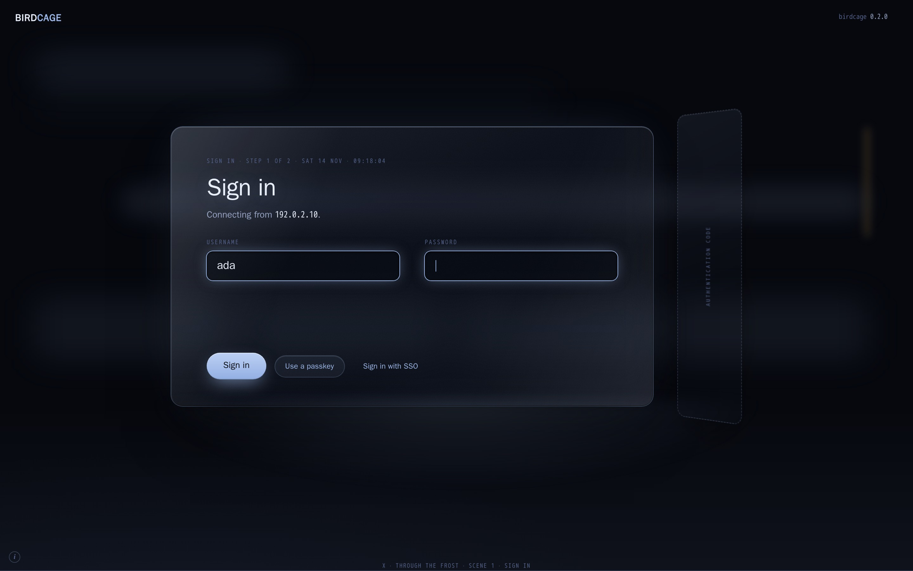

Round 9's S, smoked glass, carried forward and tied into the ratified shell (#8, slice B). Three directions, each a different answer to how the glass belongs to this dashboard. Each page scrolls through the same eight scenes as round 9: sign in, second factor, first run, enrol an authenticator, recovery codes, session expired over the dimmed dashboard, refused, too many attempts. Each has a motion page that loops door to door and ends in the shell's first view, and stands still under reduced motion. Same data throughout: ada from 192.0.2.10, Sat 14 Nov, birdcage 0.2.0.
The door stands exactly where the trace will run: left edge at the band's first tick, right edge at the brink. Passed panes fold into the gutter where the canary labels sit; the panes ahead stand in the deck's column at the right edge. When the last door swings away the band lines draw across the space it occupied.

direction-v-the-column.html ▸ scene 1 · sign in scene 2 · second factor scene 3 · first run scene 4 · enrol an authenticator scene 5 · recovery codes scene 6 · session expired scene 7 · refused scene 8 · too many attempts motion-v.html · door to door, then the hand-over ▸The brink, the trace's amber line of now, already stands in the room at x = 1368 with the quarter-hour axis under it, carrying the time of each scene. The doors hang in front of it. When the last door swings away the brink shortens to the band's height and the four lines draw across to meet it.

direction-w-the-brink.html ▸ scene 1 · sign in scene 2 · second factor scene 3 · first run scene 4 · enrol an authenticator scene 5 · recovery codes scene 6 · session expired scene 7 · refused scene 8 · too many attempts motion-w.html · door to door, then the hand-over ▸Behind the glass is the shell's own light: the heading, the band, the four tiles and the brink as blurred shapes at their real positions, no text. Each door passed clears the frost a little. When the last door swings away the blur goes to zero and the shapes are the page.

direction-x-through-the-frost.html ▸ scene 1 · sign in scene 2 · second factor scene 3 · first run scene 4 · enrol an authenticator scene 5 · recovery codes scene 6 · session expired scene 7 · refused scene 8 · too many attempts motion-x.html · door to door, then the hand-over ▸